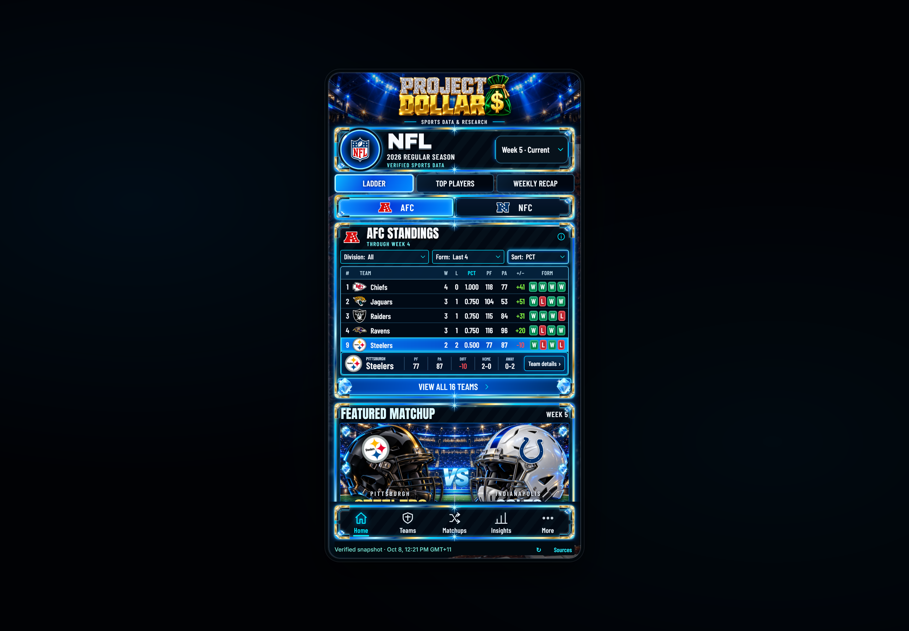

Actual hosted NFL dashboard
Untouched original WebKit browser captures of the public site. Both requested iPhone sizes and desktop passed functional checks; all 203 delivered runtime files matched the reviewed source with normal TLS verification. Release record · Local browser comparison
The approved visual source is the chat attachment. Its original bytes were unavailable; this gallery does not recreate it or claim pixel identity. Full-content views temporarily expose the real internal scroller for evidence. Normal views retain production geometry and natural animation.
Desktop — 1440 × 1000
Open original desktop PNG